Breakthroughs in Mechanical Engineering#
“Give me a place to stand, and I will move the Earth.” – Archimedes, on the lever, as reported by Pappus of Alexandria
Mechanical engineering began as the craft of building machines and became
a science when their parts could be calculated before they were made.
Natural philosophers of the seventeenth and eighteenth centuries supplied
the dynamics: inertia, friction and the geometry of gear teeth. Engineers
of the nineteenth century turned machines into kinematic chains and
measured what friction and lubrication cost, and sized gear teeth, shafts
and balance weights by calculation. The twentieth century added vibration
absorbers, rotating shafts, bolted joints, springs, rolling bearings and the
analytical design of linkages and robots. The entries trace the ideas behind
engineeringkit.mechanical_engineering. Each links to the implementing
function and to a gallery example devoted to it.
1673 – Huygens’s Centre of Oscillation and the Parallel-Axis Theorem#
Christiaan Huygens built the first accurate pendulum clocks, and in Horologium oscillatorium he worked out how a rigid body swings about a pivot. The body behaves like a simple pendulum whose length runs to its centre of oscillation, \(L = I_O/(md)\), where \(I_O\) is the sum of \(r^2\,dm\) about the pivot, later called the moment of inertia. Huygens showed that the pivot and the centre of oscillation can be swapped without changing the period, the principle of Kater’s reversible pendulum. Jakob Steiner (1840) stated the general rule \(I_O = I_G + md^2\) that moves a moment of inertia from the centre of mass to any parallel axis.
Implementation: engineeringkit.mechanical_engineering.parallel_axis(),
engineeringkit.mechanical_engineering.disk_inertia() and
engineeringkit.mechanical_engineering.solid_sphere_inertia(). The
example sums \(r^2\,dm\) over a disk, times a simulated compound
pendulum and computes the clock-bob correction.
References: C. Huygens, Horologium oscillatorium (Muguet, Paris, 1673), part IV; J. Steiner, “Von dem Krümmungs-Schwerpuncte ebener Curven,” J. Reine Angew. Math. 21 (1840) 33-63.
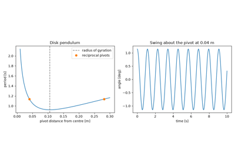
Huygens’s compound pendulum and the parallel-axis theorem (1673)
1753 – Daniel Bernoulli’s Superposition of Normal Modes#
Euler and d’Alembert had solved the vibrating string as a travelling wave of arbitrary shape. Daniel Bernoulli answered in 1753 that the string sounds a set of simple vibrations at once, each with its own shape and frequency, and that every motion is their sum, which explained the overtones heard with the fundamental. For masses and springs the simple vibrations are the eigenvectors of \(K\phi = \omega^2 M\phi\), the small-oscillation problem Lagrange set out in 1788. The modes are orthogonal through \(M\) and \(K\), so the coupled equations split into independent oscillators. Modal superposition is still how structures and machines are analysed for vibration, with modal damping added mode by mode.
Implementation: engineeringkit.mechanical_engineering.normal_modes(),
engineeringkit.mechanical_engineering.modal_response() and
engineeringkit.mechanical_engineering.harmonic_response(). The
example finds the modes of a three-storey frame and checks free and forced
superposition against direct solutions.
References: D. Bernoulli, “Réflexions et éclaircissemens sur les nouvelles vibrations des cordes,” Hist. Acad. R. Sci. Belles Lettres Berlin 9 (1753, published 1755) 147-172; J. L. Lagrange, Mécanique analytique (Desaint, Paris, 1788), part II, section VI.
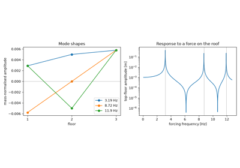
Daniel Bernoulli’s superposition of normal modes (1753)
1765 – Euler’s Involute Gear Tooth#
Millwrights cut gear teeth by eye, and the gears ran roughly because the speed ratio varied as each pair of teeth rolled through contact. Leonhard Euler worked out which tooth shapes keep the ratio constant: the common normal at the contact point must always pass through the same pitch point on the line of centres. He showed that the involute of a circle meets the condition. Its normal is tangent to the base circle, so two involutes touch along a fixed line tangent to both base circles. The ratio then depends only on the base radii, and an involute pair still runs true if its centres are moved apart. Involute teeth took over in the nineteenth century, once they could be generated by machine.
Implementation: engineeringkit.mechanical_engineering.gear_ratio(),
engineeringkit.mechanical_engineering.gear_output_speed() and
engineeringkit.mechanical_engineering.gear_output_torque(). The example
checks that the involute’s normals are tangent to the base circle, that the
ratio survives a change of centre distance, and the power balance of a
two-stage train.
References: L. Euler, “Supplementum de figura dentium rotarum,” Novi Comment. Acad. Sci. Petropol. 11 (1765, published 1767) 207-231.
1769 – Euler and Eytelwein’s Belt-Friction Law#
Why can a sailor with a few turns of rope round a bollard hold a ship? Euler found that the tension in a rope sliding over a fixed drum grows by \(dT = \mu T\,d\theta\) on each element of contact. Integrated, this gives \(T_1/T_2 = e^{\mu\theta}\): every extra turn multiplies the holding force by the same factor. Johann Albert Eytelwein’s 1808 handbook brought the result to engineers. It fixes the largest tension difference, and so the power, that a belt drive can carry before it slips. A V-belt wedged in its groove grips \(1/\sin(\beta/2)\) times harder.
Implementation: engineeringkit.mechanical_engineering.belt_tension_ratio()
and engineeringkit.mechanical_engineering.belt_speed(). The example
builds the exponential from small arcs of contact and compares a flat belt
with a V-belt.
References: L. Euler, “Remarques sur l’effect du frottement dans l’équilibre,” Mém. Acad. Sci. Berlin 18 (1762, published 1769) 265-278; J. A. Eytelwein, Handbuch der Statik fester Körper (Berlin, 1808).
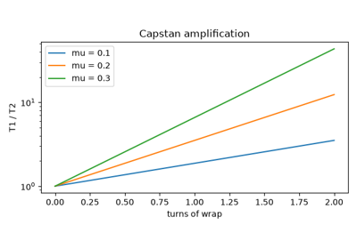
The Euler-Eytelwein belt-friction law (1769)
1785 – Coulomb’s Laws of Friction and the Power Screw#
Charles-Augustin de Coulomb won the Paris Academy’s 1781 prize for a memoir on the friction of simple machines, published in full in 1785. Working at the Rochefort dockyard with heavy sledges and ropes, he found sliding friction proportional to the normal load, nearly independent of contact area and only weakly dependent on speed, \(F = \mu N\). Applied to a screw thread, which is an inclined plane wrapped round a cylinder, the law gives the torque to raise a load. It also shows that a screw holding its load without a brake cannot be more than 50% efficient.
Implementation: engineeringkit.mechanical_engineering.screw_torque_raise().
The example solves the force balance on the unwrapped thread and plots
efficiency against lead angle.
References: C. A. Coulomb, “Théorie des machines simples,” Mém. Math. Phys. Acad. R. Sci. 10 (1785) 161-332.
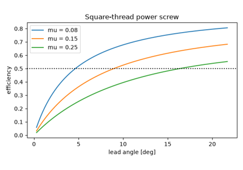
Coulomb’s friction and the power screw (1785)
1788 – Lagrange’s Equations of Motion#
Joseph-Louis Lagrange’s Mécanique analytique boasted that it contained no figures. It wrote the motion of any system in terms of independent generalised coordinates \(q\) and the scalar \(L = T - V\), \(\frac{d}{dt}\partial L/\partial\dot q - \partial L/\partial q = Q\). Workless constraint forces, such as the tension in a pendulum rod or the reactions of a mechanism’s joints, never appear, so a double pendulum or a linkage takes two energies instead of a free-body diagram per part. Linearised about an equilibrium, the equations become \(M\ddot q + Kq = 0\), the eigenproblem of normal modes.
Implementation: engineeringkit.mechanical_engineering.lagrange_accelerations()
and engineeringkit.mechanical_engineering.simulate_lagrangian(),
which take the derivatives of \(L\) numerically. The example runs a
double pendulum against its hand-derived equations and energy, and checks
its small oscillations against engineeringkit.mechanical_engineering.normal_modes().
References: J. L. Lagrange, Mécanique analytique (Desaint, Paris, 1788), part II, section IV.
1829 – Coriolis Defines Work and Kinetic Energy#
Engineers judged machines by the “effect” they produced, measured in different ways by different authors. Gaspard-Gustave Coriolis, in Du calcul de l’effet des machines, named force times distance travail, work, and took \(\tfrac12 mv^2\) rather than Leibniz’s \(mv^2\) as the measure of motion, so that the work done on a body equals its gain in kinetic energy exactly. The same accounting covers rotation, \(\tfrac12 I\omega^2\) and \(P = T\omega\). It sizes a flywheel by the energy it must give up between two speeds.
Implementation: engineeringkit.mechanical_engineering.work_constant_force(),
engineeringkit.mechanical_engineering.kinetic_energy(),
engineeringkit.mechanical_engineering.rotational_energy(),
engineeringkit.mechanical_engineering.power_torque(),
engineeringkit.mechanical_engineering.flywheel_energy() and
engineeringkit.mechanical_engineering.angular_momentum(). The example
checks the work-energy theorem for a pulled cart and a punch-press
flywheel against integrated equations of motion.
References: G. Coriolis, Du calcul de l’effet des machines (Carilian-Goeury, Paris, 1829).
1872-1886 – Aronhold and Kennedy’s Theorem of Three Centres#
At each instant any two links of a plane mechanism turn relative to each other about an instant centre. Siegfried Aronhold in Berlin (1872) and Alexander Kennedy in London (1886), independently, proved that the three instant centres of any three links lie on one straight line. The theorem locates the centres that cannot be seen by inspection, and with them the velocity of every point: in a four-bar linkage the speed ratio \(\omega_4/\omega_2\) is the ratio of the distances of the crank-rocker centre from the two ground pivots. Graphical velocity and acceleration polygons built on the same idea were the standard method until the loop-closure equations could be differentiated and solved numerically.
Implementation: engineeringkit.mechanical_engineering.fourbar_kinematics()
and engineeringkit.mechanical_engineering.slider_crank_kinematics().
The example checks the analytical four-bar velocities against the instant
centre, the piston velocity against the rod’s instant centre and the piston
acceleration against its two-term series.
References: S. H. Aronhold, “Grundzüge der kinematischen Geometrie,” Verh. Ver. Beförd. Gewerbefleisses Preussen 51 (1872) 129-155; A. B. W. Kennedy, The Mechanics of Machinery (Macmillan, London, 1886). The Aronhold citation is taken from textbook histories; the original was not consulted.
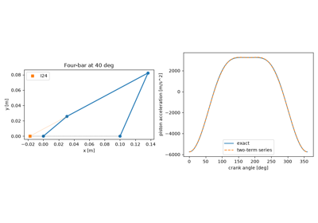
Aronhold and Kennedy’s theorem of three centres (1872-1886)
1875 – Reuleaux’s Kinematics of Machinery#
Franz Reuleaux’s Theoretische Kinematik reduced every machine to a kinematic chain of rigid links joined by pairs, with one link held fixed. Fixing a different link of the same chain gives a different mechanism, an inversion. The slider-crank chain yields the piston engine, the quick-return mechanism and the oscillating cylinder. Reuleaux’s symbolic notation and his collection of some 800 teaching models made kinematics a subject of its own. For the engine, the exact piston motion is not harmonic. The second harmonic, of relative size \(r/l\), is a shaking force that no counterweight on the crank can remove.
Implementation: engineeringkit.mechanical_engineering.slider_crank_displacement()
and engineeringkit.mechanical_engineering.centripetal_force(). The
example differentiates the piston position and checks the accelerations at
top and bottom dead centre.
References: F. Reuleaux, Theoretische Kinematik: Grundzüge einer Theorie des Maschinenwesens (Vieweg, Braunschweig, 1875); trans. A. B. W. Kennedy, The Kinematics of Machinery (Macmillan, London, 1876).
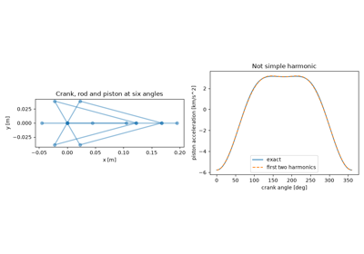
Reuleaux’s kinematics of machinery: the slider-crank (1875)
1877 – Rayleigh’s Theory of Sound: Free and Forced Vibration#
Lord Rayleigh’s two volumes gathered the vibration of strings, bars, plates, air columns and bells into one linear theory, and set out the behaviour of the damped oscillator \(m\ddot x + c\dot x + kx = 0\). It rings at \(\omega_n = \sqrt{k/m}\), slightly slower when damped, and driven harmonically it resonates near \(\omega_n\), lagging the force by 90 degrees there. He also gave the energy method that bears his name: for an assumed shape of motion, equate the peak kinetic and potential energies. Because the true mode minimises the resulting frequency, a reasonable guess gives a close upper bound. The method shows, for example, that a spring’s own mass adds a third of itself to the moving mass.
Implementation: engineeringkit.mechanical_engineering.natural_frequency(),
engineeringkit.mechanical_engineering.natural_frequency_hz(),
engineeringkit.mechanical_engineering.damping_ratio(),
engineeringkit.mechanical_engineering.damped_frequency(),
engineeringkit.mechanical_engineering.simulate_sdof(),
engineeringkit.mechanical_engineering.magnification_factor() and
engineeringkit.mechanical_engineering.phase_angle(). The first example
times simulated free decays and checks Rayleigh’s spring-mass correction
against the exact frequency; the second checks the forced steady state
against the magnification factor and phase.
References: J. W. Strutt, Baron Rayleigh, The Theory of Sound, vol. 1 (Macmillan, London, 1877).
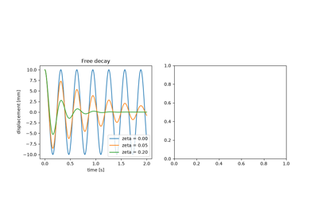
Rayleigh’s Theory of Sound: free vibration (1877)
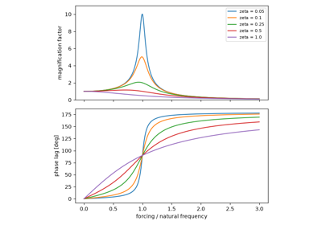
Rayleigh’s Theory of Sound: forced vibration and resonance (1877)
1883 – Grashof’s Condition for Four-Bar Linkages#
The four-bar linkage is the simplest closed chain and the basis of most mechanisms. Franz Grashof’s Theoretische Maschinenlehre gave the condition for a link to turn a full circle. If the shortest and longest links together are no longer than the other two, \(s + l \le p + q\), the shortest link rotates fully relative to all the others. Grounding a link next to it gives a crank-rocker, grounding it gives a double crank and grounding the link opposite gives a double rocker. If the inequality fails, no link turns fully whichever is grounded.
Implementation: engineeringkit.mechanical_engineering.fourbar_grashof()
and engineeringkit.mechanical_engineering.fourbar_output_angle(). The
example tries to assemble all four inversions of a Grashof and a
non-Grashof chain at every crank angle.
References: F. Grashof, Theoretische Maschinenlehre, vol. 2 (Voss, Leipzig, 1883).
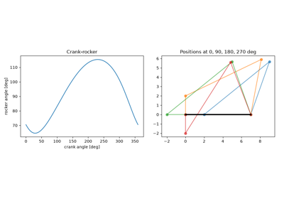
Grashof’s condition for four-bar linkages (1883)
1883 – Petroff’s Law of Bearing Friction#
Oil-lubricated railway journals did not follow Coulomb’s law: their friction rose with speed and viscosity and fell, as a coefficient, with load. Nikolai Petroff treated the oil as a viscous film sheared across the small clearance \(c\) between a centred journal and its sleeve. The friction torque is then \(2\pi\mu\omega r^3 L/c\), and the friction coefficient is proportional to the bearing characteristic \(\mu N/P\). The same year Beauchamp Tower’s experiments for the Institution of Mechanical Engineers showed that the film also carries the load on a high pressure, which led to Reynolds’s theory.
Implementation: engineeringkit.mechanical_engineering.petroff_friction_torque().
The example compares Petroff’s thin-film torque with the exact flow between
concentric cylinders and plots the Petroff line.
References: N. P. Petroff, “Friction in machines and the effect of the lubricant,” Inzhenernyi Zhurnal (St Petersburg), nos. 1-4 (1883), in Russian; B. Tower, “First report on friction experiments,” Proc. Inst. Mech. Eng. (1883) 632-659.
1886-1904 – Reynolds and Sommerfeld: Hydrodynamic Lubrication#
Osborne Reynolds explained Tower’s measurements. A journal displaced from the centre of its bearing drags oil into a converging wedge, and in a thin viscous film the pressure obeys what is now called the Reynolds equation. The film pressure supports the load with no metal-to-metal contact, which is why a well-lubricated bearing barely wears. Arnold Sommerfeld integrated the equation in closed form for a long bearing. He showed that load, speed, viscosity and geometry enter only through one number, \(S = (r/c)^2\mu N/P\), which fixes how far the journal runs off-centre. The Sommerfeld number is still the first quantity computed in journal bearing design.
Implementation: engineeringkit.mechanical_engineering.sommerfeld_number()
and engineeringkit.mechanical_engineering.long_bearing_eccentricity().
The example integrates the Reynolds equation numerically, recovers
Sommerfeld’s load and friction formulas, and shows the friction tending to
Petroff’s as the load falls.
References: O. Reynolds, “On the theory of lubrication and its application to Mr. Beauchamp Tower’s experiments,” Phil. Trans. R. Soc. Lond. 177 (1886) 157-234; A. Sommerfeld, “Zur hydrodynamischen Theorie der Schmiermittelreibung,” Z. Math. Phys. 50 (1904) 97-155.
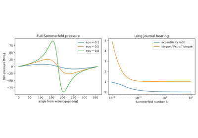
Reynolds and Sommerfeld: hydrodynamic lubrication (1886-1904)
1892 – Lewis’s Gear-Tooth Bending Formula#
Wilfred Lewis, of William Sellers and Co., gave the first rational strength calculation for gear teeth in an address to the Engineers’ Club of Philadelphia on 15 October 1892. He took the whole load at the tip of one tooth and inscribed in the tooth a parabola, a cantilever of uniform strength, tangent to the flanks at the root. The root section is then the weakest, and the stress there is \(\sigma = W_t/(F m Y)\), with a form factor \(Y\) that depends only on the tooth shape and so on the number of teeth. Carl Barth soon added a velocity factor for the dynamic load. The AGMA bending-strength equation is Lewis’s with correction factors.
Implementation: engineeringkit.mechanical_engineering.lewis_bending_stress(),
engineeringkit.mechanical_engineering.lewis_form_factor() and
engineeringkit.mechanical_engineering.barth_velocity_factor().
The example checks the uniform-strength parabola against the Lewis stress
and sizes the face width of a pinion.
References: W. Lewis, “Investigation of the strength of gear teeth,” Proc. Engineers’ Club of Philadelphia (1892) 16-23; the volume number could not be confirmed.
1894 – Dunkerley’s Whirling Shafts#
Stanley Dunkerley measured the whirling speeds of shafts carrying pulleys and found that the inverse squares of the critical speeds of each pulley alone, and of the bare shaft, add to the inverse square of the critical speed of the whole, \(1/\omega^2 \approx \sum 1/\omega_i^2\). The sum is the trace of the flexibility-mass matrix, the sum of every \(1/\omega_r^2\), so it always errs low, while Rayleigh’s quotient with the static deflection as trial shape always errs high. Together the two bracket the first critical speed by hand, and both are still used to check shaft designs.
Implementation: engineeringkit.mechanical_engineering.dunkerley_frequency()
and engineeringkit.mechanical_engineering.rayleigh_frequency().
The example brackets the first critical speed of a shaft with three disks
and shows Rayleigh’s quotient is stationary at the true mode.
References: S. Dunkerley, “On the whirling and vibration of shafts,” Phil. Trans. R. Soc. Lond. A 185 (1894) 279-360; J. W. Strutt, Baron Rayleigh, “Some general theorems relating to vibrations,” Proc. Lond. Math. Soc. 4 (1873) 357-368.
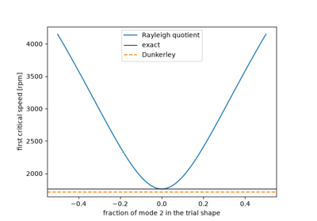
Dunkerley’s whirling shafts and Rayleigh’s bound (1894)
1902 – Dalby’s Balancing of Engines#
Faster engines made unbalance dangerous, since a mass \(m\) at radius \(r\) loads the bearings with \(mr\omega^2\). William Dalby, in an 1898 paper and The Balancing of Engines (1902), gave draughtsmen a schedule for balancing any set of rotating masses with two corrections in chosen planes. Taking moments about one correction plane, the reference plane, removes its unknown and gives the other correction directly; the force balance then gives the first. One correction can only balance a shaft statically and leaves a rocking couple that two-plane balancing removes.
Implementation: engineeringkit.mechanical_engineering.balance_rotating_masses()
and engineeringkit.mechanical_engineering.unbalance(). The example
balances four masses statically and in two planes and compares the bearing
reactions.
References: W. E. Dalby, The Balancing of Engines (Edward Arnold, London, 1902).
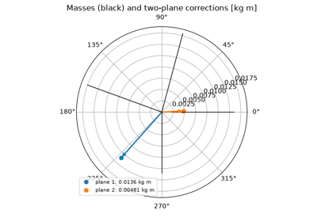
Dalby’s balancing of rotating masses (1902)
1909 – Frahm’s Vibration Absorber and Den Hartog’s Tuning#
Hermann Frahm, a German shipbuilder, cured the rolling of ships and the vibration of machines with an auxiliary spring-mass system tuned to the disturbing frequency. At that frequency the absorber’s spring pushes back with exactly the applied force, so the main body stands still. Two new resonances appear on either side, however. Ormondroyd and Den Hartog (1928) added damping to the absorber. Every response curve then passes through two fixed points, and the best tuning, \(f = 1/(1+\mu)\), makes them equal in height at \(\sqrt{1 + 2/\mu}\). Tuned mass dampers now steady skyscrapers, bridges and power lines.
Implementation: engineeringkit.mechanical_engineering.tuned_mass_damper().
The example shows Frahm’s anti-resonance and checks Den Hartog’s fixed
points and optimum peak height.
References: H. Frahm, “Device for damping vibrations of bodies,” U.S. Patent 989,958 (filed 1909, issued 1911); J. Ormondroyd and J. P. Den Hartog, “The theory of the dynamic vibration absorber,” Trans. ASME 50 (1928) APM-50-7, 9-22.
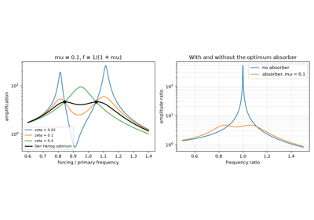
Frahm’s vibration absorber and Den Hartog’s tuning (1909)
1919 – Jeffcott’s Rotor and the Critical Speed#
Rankine (1869) had concluded that a shaft could not run steadily above the speed at which it whirls, yet Gustaf de Laval’s steam turbines did so with slender, flexible shafts. Henry Jeffcott resolved the paradox with an unbalanced disk on a massless elastic shaft. Below the critical speed \(\sqrt{k/m}\) the heavy side faces out and the whirl grows with speed. At the critical speed only damping limits the whirl. Above it the heavy side swings round to face in, and the disk settles to spin about its own centre of mass. Jeffcott’s rotor is still the starting point of rotordynamics.
Implementation: engineeringkit.mechanical_engineering.jeffcott_response(),
engineeringkit.mechanical_engineering.rotating_unbalance_force() and
engineeringkit.mechanical_engineering.transmissibility(). The example
integrates the whirl orbit below, at and above the critical speed and
computes the force reaching the bearings.
References: H. H. Jeffcott, “The lateral vibration of loaded shafts in the neighbourhood of a whirling speed – the effect of want of balance,” Phil. Mag. (6) 37 (1919) 304-314.
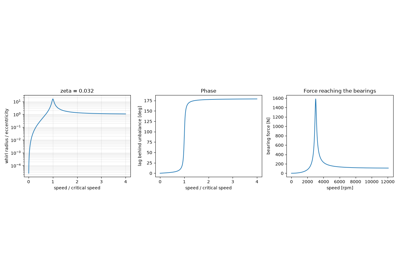
Jeffcott’s rotor and the critical speed (1919)
1921 – Holzer’s Method for Torsional Vibration#
Diesel engines and the long shafts of ships and generators suffered crankshaft failures from torsional resonance. Heinrich Holzer’s tabular method finds the natural frequencies without forming a determinant. Guess a frequency, give the first disk unit twist, and march along the shaft, adding each disk’s inertia torque and twisting each shaft by the accumulated torque. The frequency is natural when no torque is left at the free end. The method needs only arithmetic, and it carries over to beams and, as the transfer-matrix method, to the critical speeds of rotors.
Implementation: engineeringkit.mechanical_engineering.holzer_residual()
and engineeringkit.mechanical_engineering.holzer_frequencies(). The
example finds the modes of an engine, flywheel and generator and checks
them against the matrix eigenvalue problem.
References: H. Holzer, Die Berechnung der Drehschwingungen (Springer, Berlin, 1921).
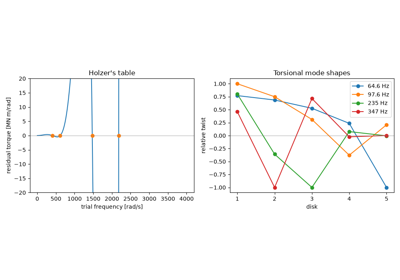
Holzer’s method for torsional vibration (1921)
1927 – Rötscher’s Bolted-Joint Diagram#
Bolts were long sized by dividing the load by the root area. Friedrich Rötscher’s Die Maschinenelemente drew bolt and clamped members as two springs, one stretched and one squeezed by the preload, with a separating load lengthening the bolt only as far as it relieves the members. The bolt then carries only the fraction \(C = k_b/(k_b + k_m)\) of the load until the joint opens at \(F_i/(1 - C)\). A stiff clamped joint with a high preload protects the bolt in fatigue, the basis of modern joint design and of VDI 2230. The members’ stiffness is found from cones of compressed material, often called Rötscher’s cones.
Implementation: engineeringkit.mechanical_engineering.bolted_joint(),
engineeringkit.mechanical_engineering.bolt_stiffness(),
engineeringkit.mechanical_engineering.member_stiffness() and
engineeringkit.mechanical_engineering.preload_torque(). The example
checks the frustum stiffness by integration and draws the joint diagram of
a preloaded M12 bolt.
References: F. Rötscher, Die Maschinenelemente (Springer, Berlin, 1927). The book was not consulted; the date and attribution follow J. H. Bickford, An Introduction to the Design and Behavior of Bolted Joints (Marcel Dekker, New York), and L. Winter’s history of joint design for the Bolt Council.
1929 – Wahl’s Curvature Factor for Helical Springs#
A helical spring’s wire is a bar in torsion, so its nominal stress is \(8FD/\pi d^3\) and its rate \(Gd^4/8D^3N\). Valve and suspension springs nonetheless broke in fatigue at loads this called safe. Arthur Wahl, at Westinghouse, treated the wire as a curved bar: the fibres on the inside of the coil are shorter, so the same twist strains them more, and the direct shear of the load adds there too. His factor \(K_W = (4C - 1)/(4C - 4) + 0.615/C\), with \(C = D/d\), became the standard correction in spring design.
Implementation: engineeringkit.mechanical_engineering.wahl_factor(),
engineeringkit.mechanical_engineering.bergstrasser_factor(),
engineeringkit.mechanical_engineering.spring_shear_stress(),
engineeringkit.mechanical_engineering.spring_rate() and
engineeringkit.mechanical_engineering.spring_index(). The example
derives the rate from the wire’s strain energy and compares the stress
factors.
References: A. M. Wahl, “Stresses in heavy closely coiled helical springs,” Trans. ASME 51 (1929) APM-51-17; the paper was not found online, and is cited from A. M. Wahl, Mechanical Springs (Penton, Cleveland, 1944), and Shigley’s Mechanical Engineering Design.
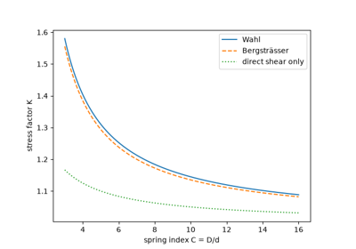
Wahl’s curvature factor for helical springs (1929)
1947 – Lundberg and Palmgren’s Rolling-Bearing Life#
Ball and roller bearings fail by fatigue of the raceway, and identical bearings under identical loads fail at widely different times. Gustaf Lundberg and Arvid Palmgren of SKF modelled the lives as a Weibull distribution arising from the stressed volume below the surface. They defined the rating life \(L_{10}\), reached by 90% of bearings, and showed it varies as \((C/P)^p\), with \(p = 3\) for ball and \(10/3\) for roller bearings. Their theory became the basis of the ISO 281 bearing-life standard.
Implementation: engineeringkit.mechanical_engineering.bearing_l10_life().
The example draws a simulated batch of Weibull lives and checks the 90%
survival and the cube law.
References: G. Lundberg and A. Palmgren, “Dynamic capacity of rolling bearings,” Acta Polytech. Mech. Eng. Ser. 1, no. 3 (1947).
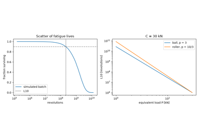
Lundberg and Palmgren’s rolling-bearing life (1947)
1954 – Freudenstein’s Equation for Four-Bar Synthesis#
Linkage design was a graphical art until Ferdinand Freudenstein wrote the four-bar’s loop closure in a form linear in three ratios of link lengths, \(K_1\cos\theta_4 - K_2\cos\theta_2 + K_3 = \cos(\theta_2 - \theta_4)\). Prescribing three pairs of input and output angles gives three linear equations, and a linkage that generates a desired function follows from a 3 by 3 solve. Spacing the precision points at Chebyshev nodes keeps the error between them small. Freudenstein’s paper started the analytical, and soon computer-aided, kinematic synthesis of mechanisms.
Implementation: engineeringkit.mechanical_engineering.freudenstein_coefficients(),
engineeringkit.mechanical_engineering.freudenstein_link_lengths() and
engineeringkit.mechanical_engineering.fourbar_output_angle(). The
example synthesises a logarithmic function generator and measures its
structural error.
References: F. Freudenstein, “An analytical approach to the design of four-link mechanisms,” Trans. ASME 76 (1954) 483-492.
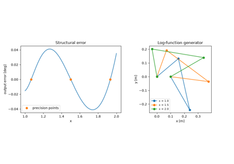
Freudenstein’s equation for four-bar synthesis (1954)